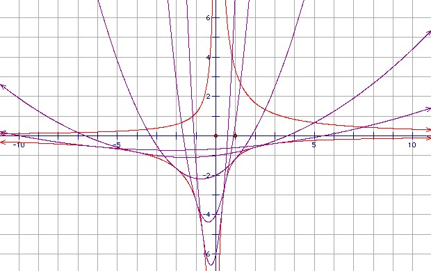

Let Pa be the parabola y = a3x2/3 + a2x/2 - 2a. Find the locus of the vertices of Pa, and the envelope of Pa. Sketch the envelope and two Pa.
Solution
We can write the equation of Pa as (y + 35a/16) = (a3/3)(x + 3/4a)2, so the vertex is x = -3/4a, y = -35a/16. The locus of the vertex is xy = 105/64.

The graph shows P3, P2, P1, P1/2, P1/3 and the two hyperbolae yx = -7/6, yx = 10/3. It shows that for positive a, the parabolas touch the lower branches of the hyperbolae. For negative a they touch the upper branches.
That is not hard to verify. We claim that Pa and xy = 10/3 touch at x = -2/a, y = -5a/3. The point obviously lies on xy = 10/3. We have (a3/3)(x + 3/4a)2 = (1/3)(-2 + 3/4)2 a = 25a/48 = (-5a/3 + 35a/16), so the point also lies on Pa. The gradient of xy = 10/3 at the point is -10/(3x2) = -5a2/6. The gradient of Pa at the point is 2a3x/3 + a2/2 = -5a2/6.
Similarly, we claim that Pa and xy = -7/6 touch at x = 1/a, y = -7a/6. The point obviously lies on xy = -7/6. We have (a3/3)(x + 3/4a)2 = (a/3)(1 + 3/4)2 = 49a/48 = (-7a/6 + 35a/16), so the point also lies on Pa. The gradient of xy = -7/6 at the point is 7/(6x2) = 7a2/6. The gradient of Pa at the point is 2a3x/3 + a2/2 = a2(2/3 + 1/2) = 7a2/6.
It is less clear how you get the hyperbolas. One standard approach is to look for the singular points of the mapping f(a,t) = (t, a3t2/3 + a2t/2 - 2a). The matrix for the derivative is:
1 0
2a3t/3+a2/2 a2t2+at-2
which has zero determinant when at = 1 or -2, so xy = 7/6 or -10/3.
Thanks to Dave Rusin

© John Scholes
jscholes@kalva.demon.co.uk
20 January 2004
Last corrected/updated 20 Jan 04